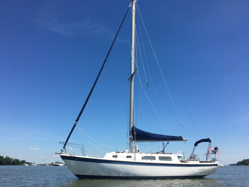
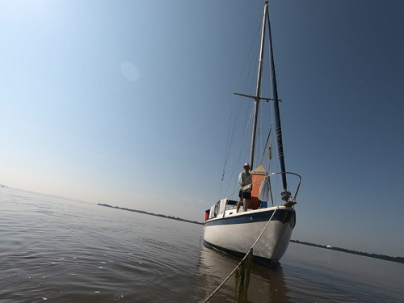
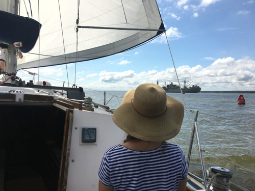
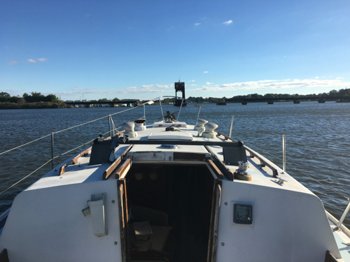

After two years of sailing around the Chesapeake, exploring various creeks and inlets and rebuilding various systems aboard Conifer, it was time for the big project: redoing the decks. My initial plan was to unstep the mast, remove all the deck hardware, sand and re-paint the decks, and then properly re-bed the deck hardware to prevent future leaks. Well, I started with this plan, but as some of you may know, nothing on a boat goes according to plan. The next series of posts will chronicle the winter projects I undertake during the legendary winter of 2018.
   